肯亞國家公園
歷史資料
肯亞山國家公園，為肯亞所設立的一個國家公園，包含肯亞山及周邊地區。成立於1949年。該地原為森林保護區，後森林保護區的部分區域被闢為國家公園，目前森林將國家公園包圍。1978年，該地成為生物圈保護區。1997年，肯亞山國家公園及周邊的森林保護區一起成為世界遺產。
國家公園總面積715平方公里，周圍的森林保護區面積705.2平方公里。被列入世界遺產的總面積為1,420平方公里。
肯亞是世界上最著名的野生動物目的地之一，其豐富多樣的生態系統保護了大量的野生動植物。這個國家有許多的國家公園和保護區，每個都具有獨特的特點和魅力。以下是肯亞十大著名國家公園的介紹，絕對是旅遊愛好者必去的景點。

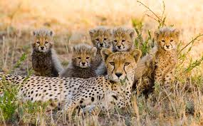
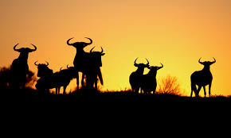
馬賽馬拉國家保護區
提到肯亞，馬賽馬拉國家保護區絕對是不能錯過的景點之一，特別是每年七月至十月的動物遷徙更是全球自然奇觀。
- 位置：位於肯亞與坦尚尼亞接壤地帶
- 特色：可觀賞到牛羚大遷徙、大量獅子及其他大型捕食者
- 最佳旅遊季節：七月至十月
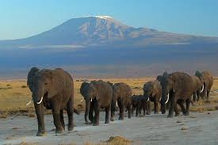
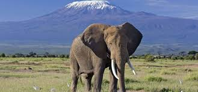
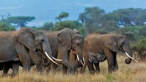
安博塞利國家公園
這裡是觀賞非洲象的絕佳地點，並提供壯麗的乞力馬札羅山景觀。
- 位置：靠近坦尚尼亞邊境
- 特色：大象、乞力馬札羅山的美麗背景
- 最佳旅遊季節：六月至十月
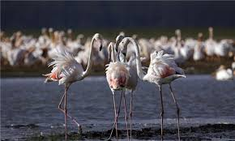
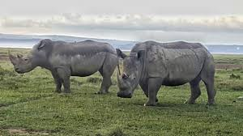
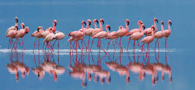
納庫魯湖國家公園
因其數以萬計的火烈鳥而聞名，納庫魯湖也是多種野生動物的家園。
- 位置：距離奈洛比約150公里
- 特色：火烈鳥、黑犀牛
- 最佳旅遊季節：全年
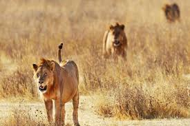
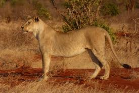
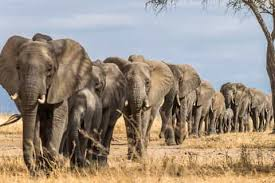
察沃國家公園
肯亞最大的公園，分為察沃東和察沃西兩部分，擁有壯麗的風景和豐富的動植物。
- 位置：東部和西部地區交界
- 特色：野象、獅子、眾多的鳥類
- 最佳旅遊季節：五月至十月
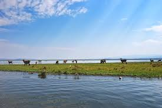
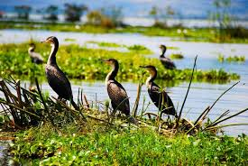
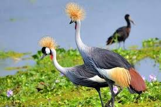
納伊瓦沙湖
這裡是水鳥的天堂，也是驕傲的河馬的家園，湖上風景如畫。
- 位置：大裂谷地區
- 特色：水鳥、河馬
- 最佳旅遊季節：全年
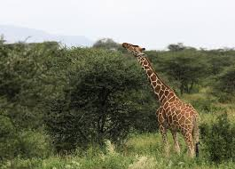
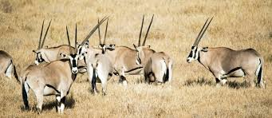
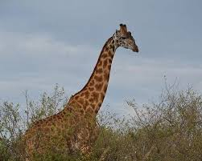
桑布魯國家保護區
這個較不為人知的公園擁有一些獨特的物種，如網紋長頸鹿和格氏羚羊。
- 位置：北部省
- 特色：網紋長頸鹿、格氏羚羊
- 最佳旅遊季節：六月至十月
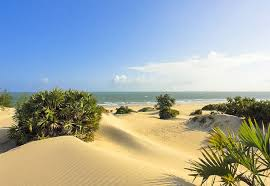
拉穆群島
不只是一個自然保護區，這裡還保有豐富的文化遺産。
- 位置：印度洋岸邊
- 特色：文化遺産、海洋生物
- 最佳旅遊季節：六月至三月
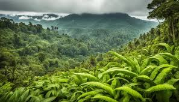
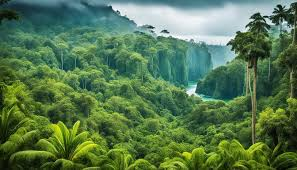
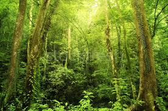
赤道森林保護區
這是非洲少數高海拔森林之一，內有大量的瀕危物種。
- 位置：中南部地區
- 特色：高海拔森林、瀕危物種
- 最佳旅遊季節：全年
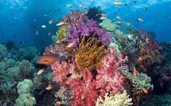
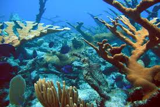
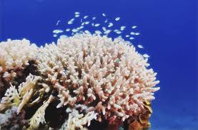
海明威國家公園
以綠樹成蔭的海岸和迷人的珊瑚礁聞名，是潛水愛好者的天堂。
- 位置：東海岸
- 特色：潛水、珊瑚礁
- 最佳旅遊季節：七月至三月
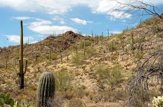
海德堡國家公園
此地因為擁有豬鴨和巨型仙人掌而名聲大噪。
- 位置：南方海岸
- 特色：豬鴨、巨型仙人掌
- 最佳旅遊季節：六月至十二月